Eng
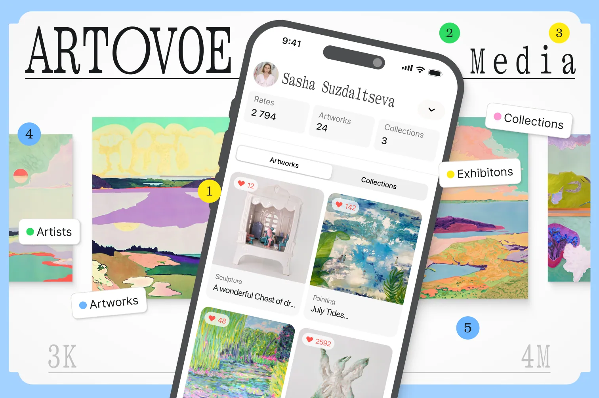
A digital catalogue of young art beyond the algorithmic feed
Artovoe is a media catalogue of works by young artists, where every piece lives together with its context: next to its author, its series and its exhibition history. The three of us built it at HSE Art and Design as a student MVP, and it ended up as a working web application on Ruby on Rails.
| Timeline | February 2024 – July 2024 |
| Project | Educational, team |
| My role | UX/UI, Development |
| Awards | 2nd place DAFES, Digital product |
Context
Students of the Contemporary Art programme at HSE kept telling us the same story. For anyone to see their work, an artist also has to become a media person, yet local art quickly drowns in Instagram’s algorithmic feed, and Telegram channels have to be found and scrolled through by hand. We saw a similar picture at art markets, where you only learn about young artists if you happen to be there in person.
Meanwhile, the meaning of a work of contemporary art is built from context and interpretation, and that context is exactly what the feed cuts off. On top of that, the field has several players with their own logic: the artist seeks autonomy, the viewer seeks guidance, institutions seek order and algorithms seek measurable visibility. So we framed the task like this.
We need to make young artists visible without turning their art into a simplified unit of content
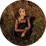
Eva Livinskaya
My close friend and one of the project’s co-authorsResearch
First, we mapped the platforms where young art lives today along two axes. One runs from curatorial selection to information noise, the other from trade to a community of connoisseurs. Marketplaces like Etsy and Avito end up serving the deal, while social networks and Telegram channels gather a community with no selection at all. The corner where selection meets community turned out to be empty, and that is where we placed Artovoe.
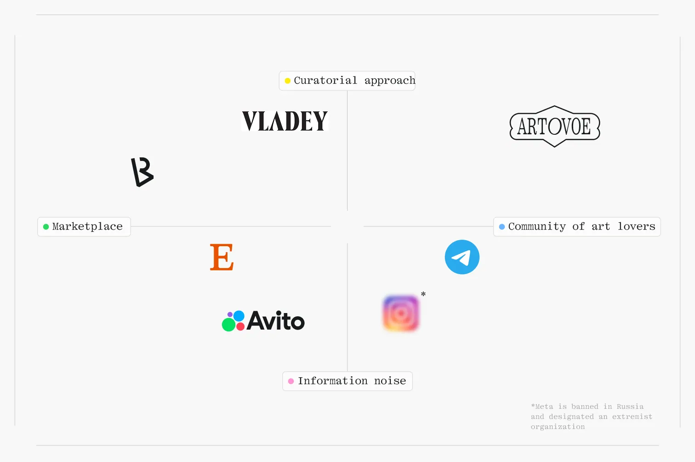
We tested demand the cheapest way possible by launching a Telegram channel with selections, artist stories and questions to the audience. In the first month, with no budget, 66 people subscribed, and 22 artists responded to the open call for young authors. In effect, artists were ready to hand their work to a curated platform that did not exist yet, and that was our signal to move on.
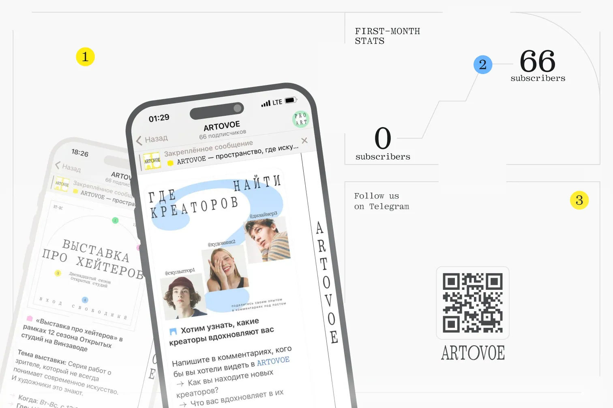
Target audience
The project has two audiences. The primary one is young artists who want their work to be noticed and appreciated. The secondary one brings together students, beginning collectors and anyone looking for prints or art objects with a story for their interior.
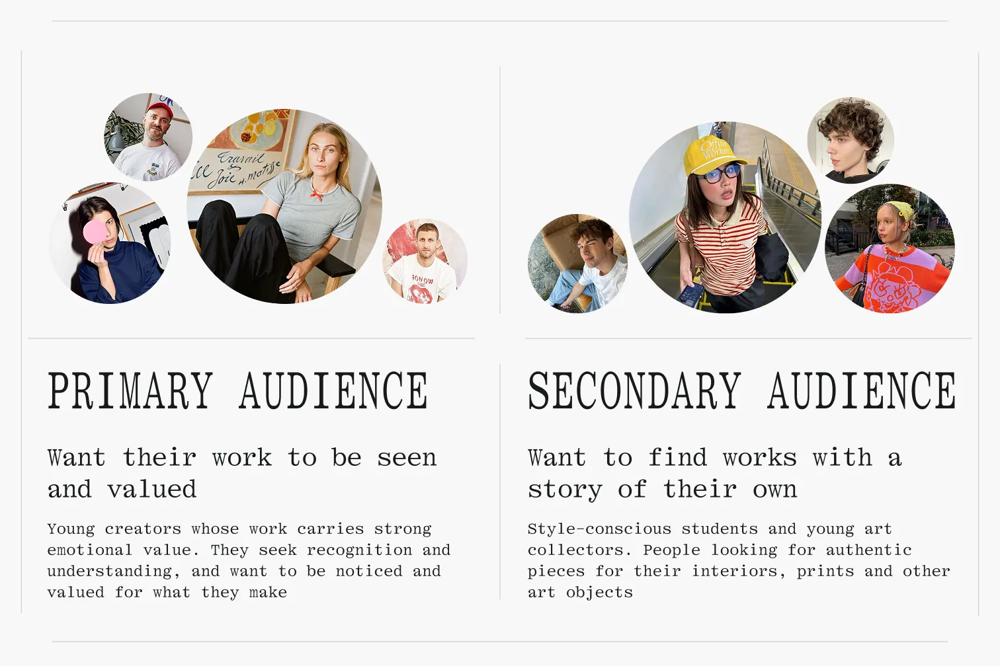
Problems
Conversations with artists and a month of the Telegram channel gave us a fairly clear picture. The channel quickly hit the same limits as any feed: it has no author profile, no search across works, and older posts sink to the bottom. In effect, the same gaps got in the way of both the artist and the viewer, so we boiled them down to three problems that we then built the product around.
- A work loses its context. An artist has nowhere to show it together with its series and exhibition history, so the portfolio ends up as a PDF or scattered across posts, where it quickly loses its structure.
- The author is hard to find. A viewer, curator or collector rarely steps outside their own circle, because the feed shows what is popular and channels have no search across works.
- The author’s position is invisible. Even after finding an artist, a curator struggles to understand their position and where they have exhibited, since the statement and exhibition history are not gathered anywhere.
Idea
This led to the idea of a curated media catalogue built on the logic of a catalogue, with its order and context. It contains only selected works, each shown together with its story, and it connects the viewer or curator directly with the artist.
The project does not act as an arbiter of taste and leaves interpretation to the viewer. For the same reason we did not put commerce at the centre: the price is optional, and a conversation about buying starts with the “Contact the artist” button. The catalogue also does not rank authors by how often they post, so a work’s visibility is defined by selection and context.
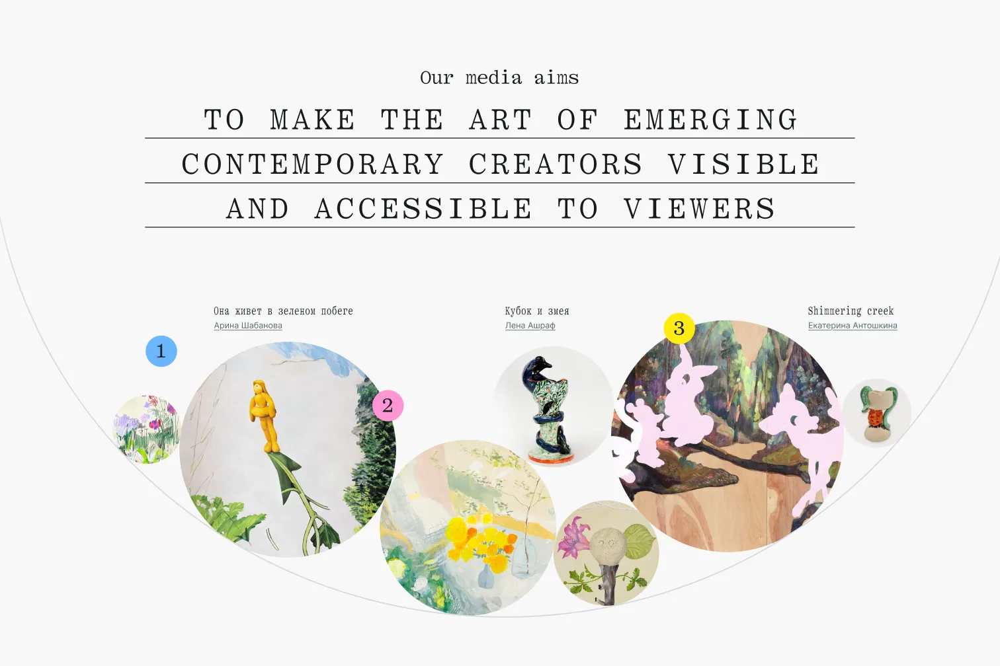
Digital product
The work sits at the centre of the model, and everything else exists to give it context. A work has a description, semantic tags, a year, a location and an edition size, plus a list of exhibitions and events it took part in. On the art market, a history of shows raises the value of a work and the weight of its author, so exhibitions get a dedicated block in the interface, and a collection gathers works from one series on a shared page.
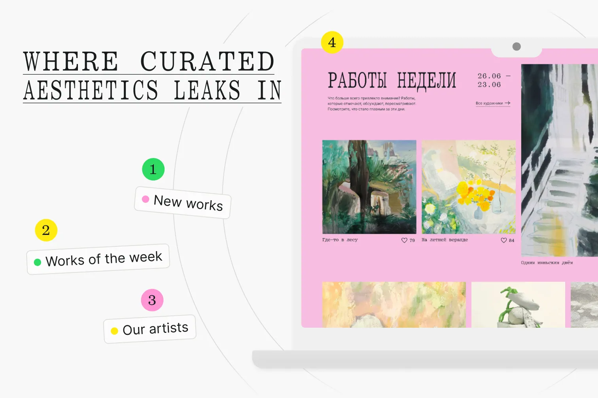
Model
The work sits at the centre of the model, while the collection, the artist profile and the catalogue sections exist to give it context. Below I go through each of these entities separately, roughly in the order a viewer comes across them.
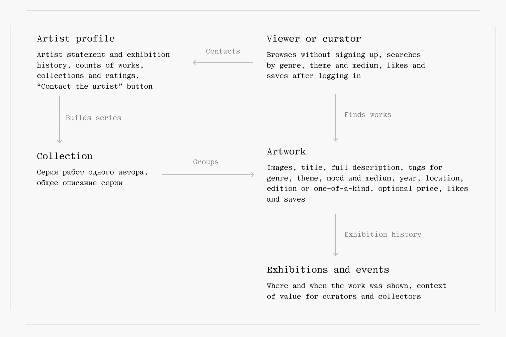
Artwork
The artwork page brings together images, a description and semantic tags, plus the year, location, edition size and an optional price set by the author. Below is a list of exhibitions and events the work took part in, because on the art market a history of shows raises its value.
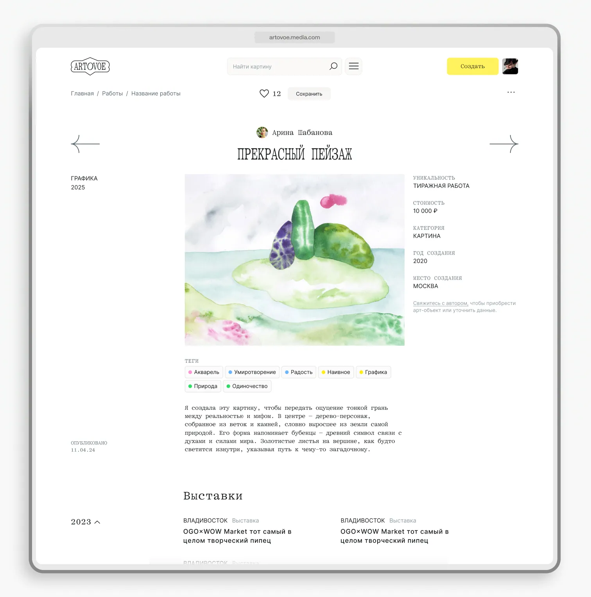
Collection
A collection gathers works from one series on a shared page with its own description. The author assembles it by mood, material, theme or year, and individual works start to read together, gaining a shared meaning none of them has on its own.
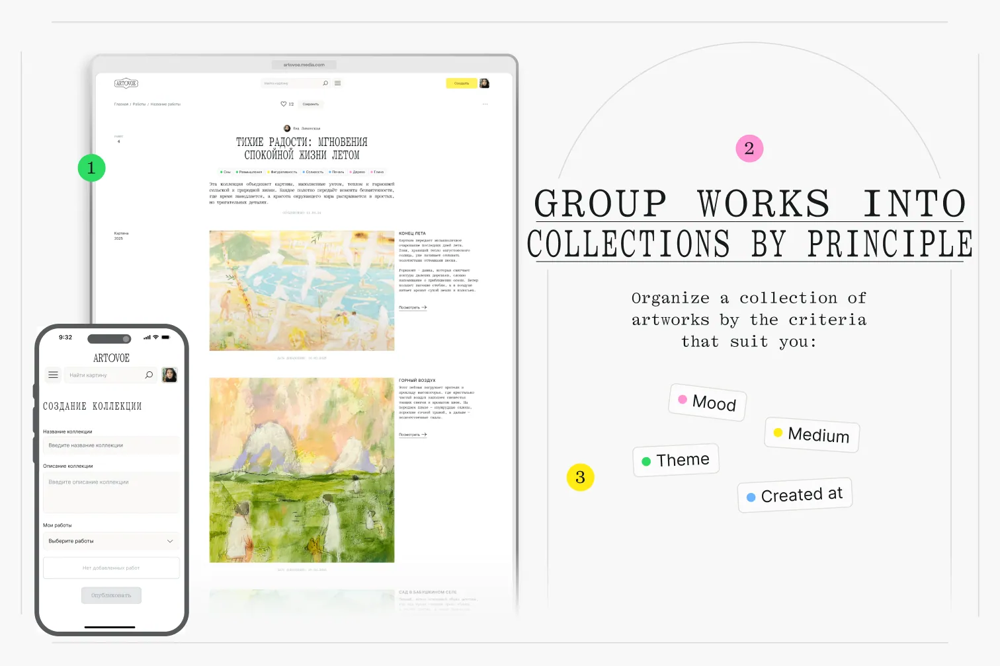
Artist profile
The profile shows all of the author’s works, collections and exhibitions along with their art statement and a likes counter. It is read by two audiences: a general viewer is satisfied with the works themselves and the ironic microcopy, while a curator finds the statement and exhibition history by year.
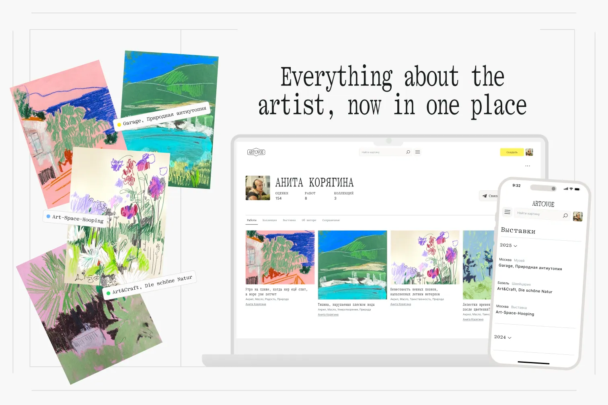
In effect, the public page secures a young author’s position in the professional field. The “Contact the artist” button opens the contact the artist chose to share, be it VK, Telegram or email, and guests can see it even without signing up.
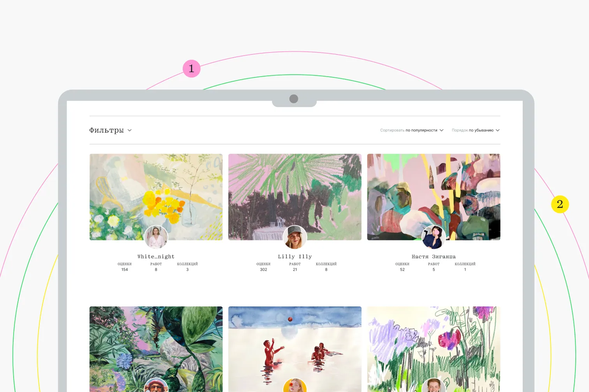
Catalogue sections
The catalogue is split into Works, Collections and Artists, and the start page brings together new works, works of the week and authors. Works of the week are counted by likes, and the sections have filters by genre, theme, mood and material, plus sorting by popularity.
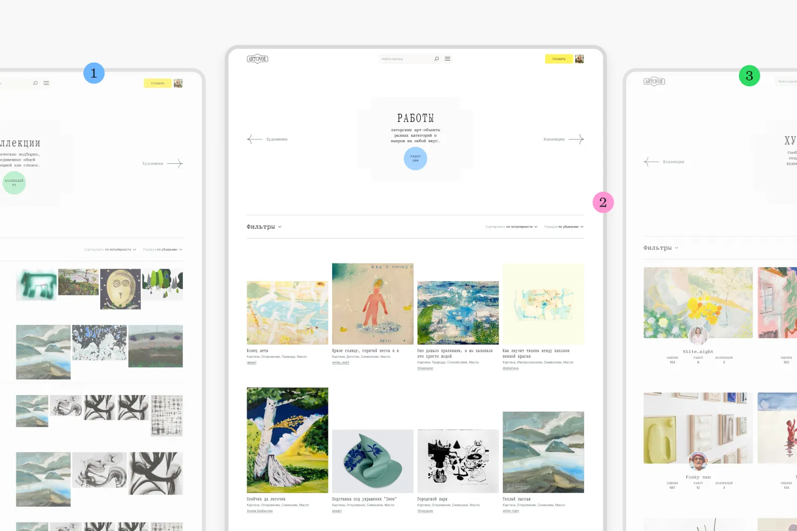
The navigation itself is built from the codes of an exhibition space. The viewer moves between sections with arrows from left to right, as if walking along a gallery wall, and the menu opens full screen and is drawn as a floor plan. Recognising these codes, the viewer brings the familiar mode of attentive looking to the catalogue.
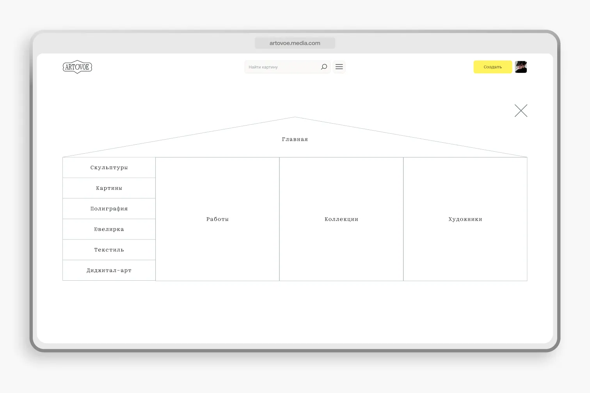
Results
The project’s strongest side turned out to be its character: honest, surreal and with an ironic post-structuralist tone.
The next version will start with a full launch and a beta test with the open-call artists, and from there it makes sense to develop curated selections, a subscription to promotion tools and partnerships with galleries.
22
Artists responded to the open call
66
Channel subscribers in the first month
2
Place at DAFES in the Digital Product category
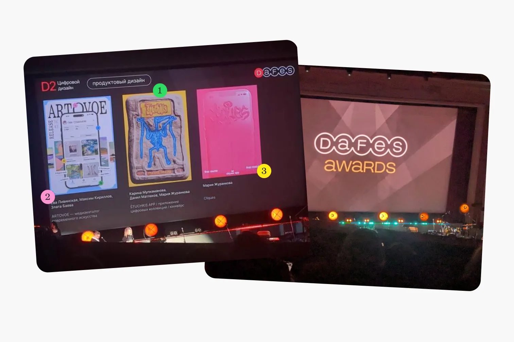